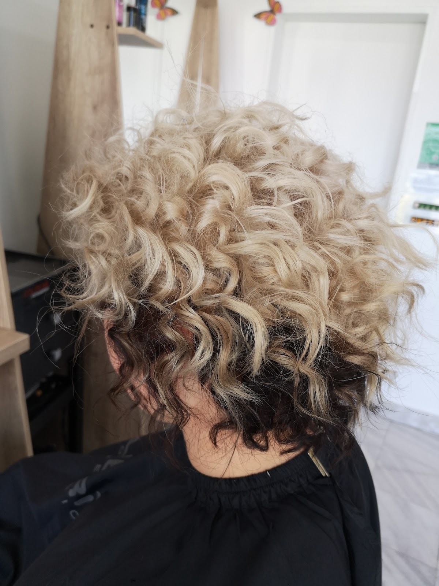
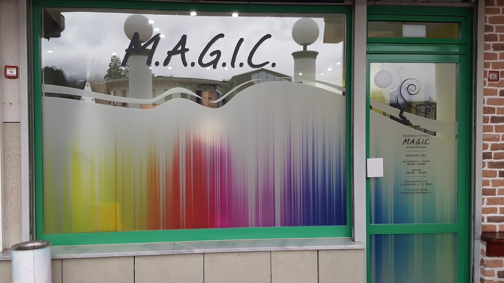
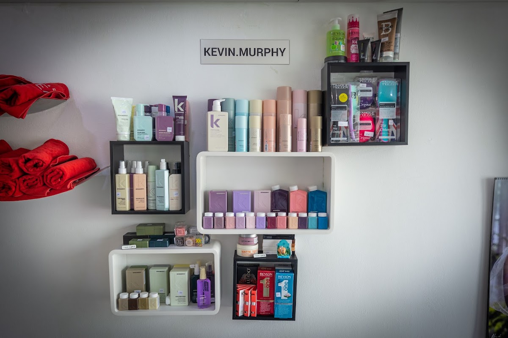
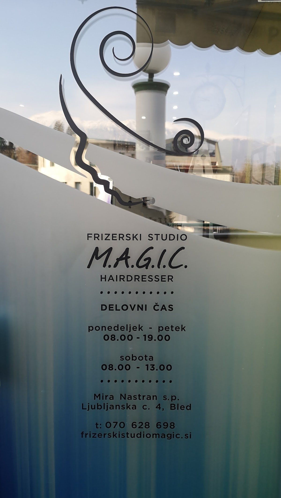
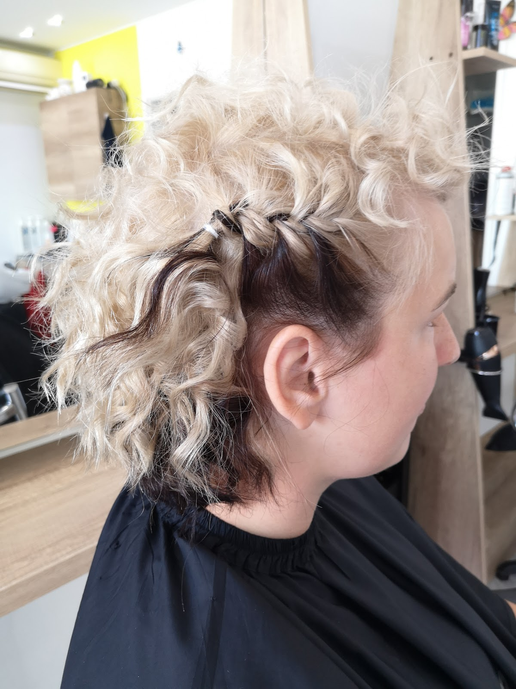
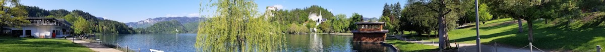
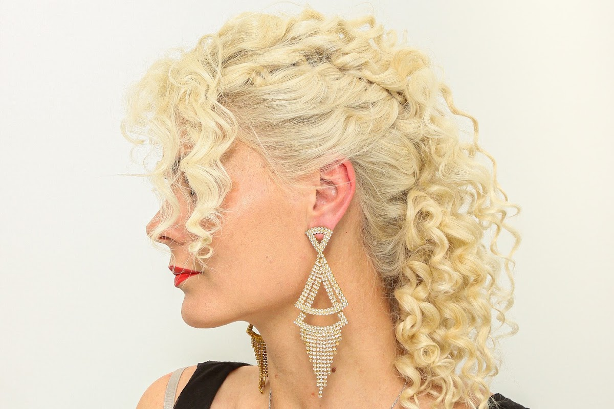
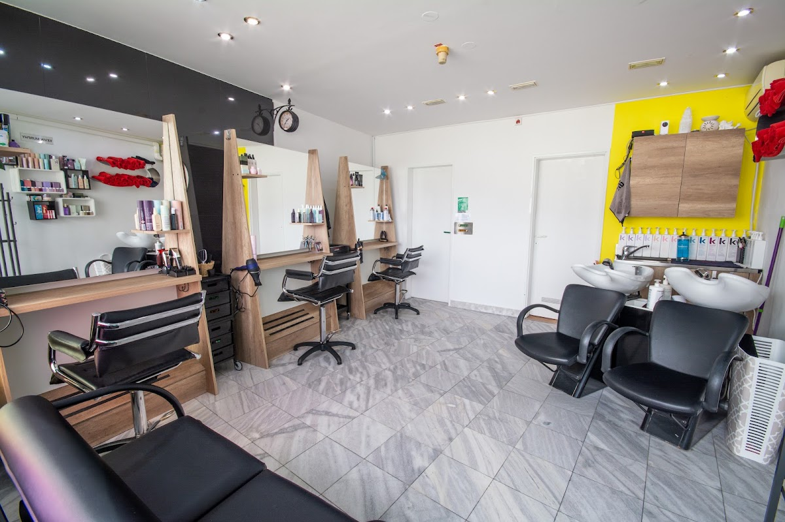

O frizerskem studiu
Frizerski studio M.A.G.I.C. vodi Mira Nastran. Studio je znan po prijaznem osebju in strokovni izvedbi storitev, kot je balayage. Stranke pogosto pohvalijo sproščeno vzdušje in pripravljenost sprejeti tudi nenapovedane obiskovalce. Uporabljajo izdelke Kevin Murphy, ki temeljijo na negi las in okolju prijazni embalaži. Studio se nahaja v trgovskem centru na Bledu.

Kaj lahko pričakujete
V studiu vas pričaka prijetno okolje in osebje, ki prisluhne vašim željam. Ponujajo različne storitve striženja, barvanja in oblikovanja las. Za več informacij ali poseben termin jih lahko vedno kontaktirate.
01
Balayage in barvanje
Studio ima izkušnje z balayage tehniko in barvanjem las. Stranke pogosto izpostavijo zadovoljstvo z rezultati in nasveti za nego.
02
Prijazna storitev
Osebje je večkrat pohvaljeno zaradi prijaznosti in sproščenega pristopa, tudi kadar pridete brez predhodnega naročila.
03
Izdelki Kevin Murphy
Uporabljajo izdelke Kevin Murphy, ki so brez sulfatov, parabenov in niso testirani na živalih. Embalaža je iz reciklirane plastike.





Rezervirajte svoj termin
Pokličite za termin ali dodatne informacije o storitvah. Prijazno osebje vam bo z veseljem svetovalo.

Lokacija na Bledu
Frizerski studio se nahaja na Ljubljanski cesti 4 v trgovskem centru na Bledu. Okolica ponuja hiter dostop in možnost opravkov v bližini. Studio je enostavno dosegljiv.